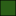

<!doctype html>
<html lang="en">
    <head>
        <meta charset="utf-8">
        <meta http-equiv="X-UA-Compatible" content="IE=edge">
        <meta name="viewport" content="initial-scale=1,user-scalable=no,maximum-scale=1,width=device-width">
        <meta name="mobile-web-app-capable" content="yes">
        <meta name="apple-mobile-web-app-capable" content="yes">
        <link rel="stylesheet" href="css/leaflet.css"><link rel="stylesheet" href="http://maxcdn.bootstrapcdn.com/font-awesome/4.6.1/css/font-awesome.min.css"><link rel="stylesheet" href="css/L.Control.Locate.min.css">
        <link rel="stylesheet" href="css/qgis2web.css">
        <link rel="stylesheet" href="css/Control.OSMGeocoder.css">
        <link rel="stylesheet" href="css/leaflet-measure.css">
        <style>
        html, body, #map {
            width: 100%;
            height: 100%;
            padding: 0;
            margin: 0;
        }
        </style>
        <title></title>
    </head>
    <body>
        <div id="map">
        </div>
        <script src="js/qgis2web_expressions.js"></script>
        <script src="js/leaflet-src.js"></script><script src="js/L.Control.Locate.min.js"></script>
        <script src="js/leaflet.rotatedMarker.js"></script>
        <script src="js/leaflet.pattern.js"></script>
        <script src="js/leaflet-hash.js"></script>
        <script src="js/Autolinker.min.js"></script>
        <script src="js/rbush.min.js"></script>
        <script src="js/labelgun.min.js"></script>
        <script src="js/labels.js"></script>
        <script src="js/Control.OSMGeocoder.js"></script>
        <script src="js/leaflet-measure.js"></script>
        <script src="data/commune_0.js"></script>
        <script src="data/routes_1.js"></script>
        <script src="data/carrefour_2.js"></script>
        <script src="data/Campus_3.js"></script>
        <script>
        var highlightLayer;
        function highlightFeature(e) {
            highlightLayer = e.target;
            highlightLayer.openPopup();
        }
        var map = L.map('map', {
            zoomControl:true, maxZoom:25, minZoom:1
        })
        var hash = new L.Hash(map);
        map.attributionControl.addAttribution('<a href="https://github.com/tomchadwin/qgis2web" target="_blank">qgis2web</a>');
        L.control.locate().addTo(map);
        var measureControl = new L.Control.Measure({
            primaryLengthUnit: 'meters',
            secondaryLengthUnit: 'kilometers',
            primaryAreaUnit: 'sqmeters',
            secondaryAreaUnit: 'hectares'
        });
        measureControl.addTo(map);
        var bounds_group = new L.featureGroup([]);
        var basemap0 = L.tileLayer('http://{s}.tile.openstreetmap.org/{z}/{x}/{y}.png', {
            attribution: '&copy; <a href="http://openstreetmap.org">OpenStreetMap</a> contributors,<a href="http://creativecommons.org/licenses/by-sa/2.0/">CC-BY-SA</a>',
            maxZoom: 25
        });
        basemap0.addTo(map);
        function setBounds() {
            if (bounds_group.getLayers().length) {
                map.fitBounds(bounds_group.getBounds());
            }
        }
        function pop_commune_0(feature, layer) {
            layer.on({
                mouseout: function(e) {
                    if (typeof layer.closePopup == 'function') {
                        layer.closePopup();
                    } else {
                        layer.eachLayer(function(feature){
                            feature.closePopup()
                        });
                    }
                },
                mouseover: highlightFeature,
            });
            var popupContent = '<table>\
                    <tr>\
                        <td colspan="2">' + (feature.properties['name_3'] !== null ? Autolinker.link(String(feature.properties['name_3'])) : '') + '</td>\
                    </tr>\
                </table>';
            layer.bindPopup(popupContent, {maxHeight: 400});
        }

        function style_commune_0_0() {
            return {
                pane: 'pane_commune_0',
                opacity: 1,
                color: 'rgba(0,0,0,1.0)',
                dashArray: '',
                lineCap: 'butt',
                lineJoin: 'miter',
                weight: 1.0, 
                fill: true,
                fillOpacity: 1,
                fillColor: 'rgba(43,95,23,1.0)',
            }
        }
        map.createPane('pane_commune_0');
        map.getPane('pane_commune_0').style.zIndex = 400;
        map.getPane('pane_commune_0').style['mix-blend-mode'] = 'normal';
        var layer_commune_0 = new L.geoJson(json_commune_0, {
            attribution: '<a href=""></a>',
            pane: 'pane_commune_0',
            onEachFeature: pop_commune_0,
            style: style_commune_0_0,
        });
        bounds_group.addLayer(layer_commune_0);
        map.addLayer(layer_commune_0);
        function pop_routes_1(feature, layer) {
            layer.on({
                mouseout: function(e) {
                    if (typeof layer.closePopup == 'function') {
                        layer.closePopup();
                    } else {
                        layer.eachLayer(function(feature){
                            feature.closePopup()
                        });
                    }
                },
                mouseover: highlightFeature,
            });
            var popupContent = '<table>\
                    <tr>\
                        <td colspan="2">' + (feature.properties['name'] !== null ? Autolinker.link(String(feature.properties['name'])) : '') + '</td>\
                    </tr>\
                </table>';
            layer.bindPopup(popupContent, {maxHeight: 400});
        }

        function style_routes_1_0() {
            return {
                pane: 'pane_routes_1',
                opacity: 1,
                color: 'rgba(243,33,10,1.0)',
                dashArray: '',
                lineCap: 'square',
                lineJoin: 'bevel',
                weight: 1.0,
                fillOpacity: 0,
            }
        }
        map.createPane('pane_routes_1');
        map.getPane('pane_routes_1').style.zIndex = 401;
        map.getPane('pane_routes_1').style['mix-blend-mode'] = 'normal';
        var layer_routes_1 = new L.geoJson(json_routes_1, {
            attribution: '<a href=""></a>',
            pane: 'pane_routes_1',
            onEachFeature: pop_routes_1,
            style: style_routes_1_0,
        });
        bounds_group.addLayer(layer_routes_1);
        map.addLayer(layer_routes_1);
        function pop_carrefour_2(feature, layer) {
            layer.on({
                mouseout: function(e) {
                    if (typeof layer.closePopup == 'function') {
                        layer.closePopup();
                    } else {
                        layer.eachLayer(function(feature){
                            feature.closePopup()
                        });
                    }
                },
                mouseover: highlightFeature,
            });
            var popupContent = '<table>\
                    <tr>\
                        <td colspan="2">' + (feature.properties['id_carrefour'] !== null ? Autolinker.link(String(feature.properties['id_carrefour'])) : '') + '</td>\
                    </tr>\
                    <tr>\
                        <td colspan="2">' + (feature.properties['nom_carrefour'] !== null ? Autolinker.link(String(feature.properties['nom_carrefour'])) : '') + '</td>\
                    </tr>\
                </table>';
            layer.bindPopup(popupContent, {maxHeight: 400});
        }

        function style_carrefour_2_0() {
            return {
                pane: 'pane_carrefour_2',
                radius: 4.0,
                opacity: 1,
                color: 'rgba(0,0,0,1.0)',
                dashArray: '',
                lineCap: 'butt',
                lineJoin: 'miter',
                weight: 1,
                fill: true,
                fillOpacity: 1,
                fillColor: 'rgba(210,115,125,1.0)',
            }
        }
        map.createPane('pane_carrefour_2');
        map.getPane('pane_carrefour_2').style.zIndex = 402;
        map.getPane('pane_carrefour_2').style['mix-blend-mode'] = 'normal';
        var layer_carrefour_2 = new L.geoJson(json_carrefour_2, {
            attribution: '<a href=""></a>',
            pane: 'pane_carrefour_2',
            onEachFeature: pop_carrefour_2,
            pointToLayer: function (feature, latlng) {
                var context = {
                    feature: feature,
                    variables: {}
                };
                return L.circleMarker(latlng, style_carrefour_2_0(feature));
            },
        });
        bounds_group.addLayer(layer_carrefour_2);
        map.addLayer(layer_carrefour_2);
        function pop_Campus_3(feature, layer) {
            layer.on({
                mouseout: function(e) {
                    if (typeof layer.closePopup == 'function') {
                        layer.closePopup();
                    } else {
                        layer.eachLayer(function(feature){
                            feature.closePopup()
                        });
                    }
                },
                mouseover: highlightFeature,
            });
            var popupContent = '<table>\
                    <tr>\
                        <td colspan="2"><strong>nom_camp</strong><br />' + (feature.properties['nom_camp'] !== null ? Autolinker.link(String(feature.properties['nom_camp'])) : '') + '</td>\
                    </tr>\
                </table>';
            layer.bindPopup(popupContent, {maxHeight: 400});
        }

        function style_Campus_3_0() {
            return {
                pane: 'pane_Campus_3',
        rotationAngle: 0.0,
        rotationOrigin: 'center center',
        icon: L.icon({
            iconUrl: 'markers/red-marker.svg',
            iconSize: [68.4, 68.4]
        }),
            }
        }
        map.createPane('pane_Campus_3');
        map.getPane('pane_Campus_3').style.zIndex = 403;
        map.getPane('pane_Campus_3').style['mix-blend-mode'] = 'normal';
        var layer_Campus_3 = new L.geoJson(json_Campus_3, {
            attribution: '<a href=""></a>',
            pane: 'pane_Campus_3',
            onEachFeature: pop_Campus_3,
            pointToLayer: function (feature, latlng) {
                var context = {
                    feature: feature,
                    variables: {}
                };
                return L.marker(latlng, style_Campus_3_0(feature));
            },
        });
        bounds_group.addLayer(layer_Campus_3);
        map.addLayer(layer_Campus_3);
        var osmGeocoder = new L.Control.OSMGeocoder({
            collapsed: false,
            position: 'topright',
            text: 'Search',
        });
        osmGeocoder.addTo(map);
        var baseMaps = {};
        L.control.layers(baseMaps,{' Campus': layer_Campus_3,' carrefour': layer_carrefour_2,' routes': layer_routes_1,' commune': layer_commune_0,},{collapsed:false}).addTo(map);
        setBounds();
        </script>
    </body>
</html>
